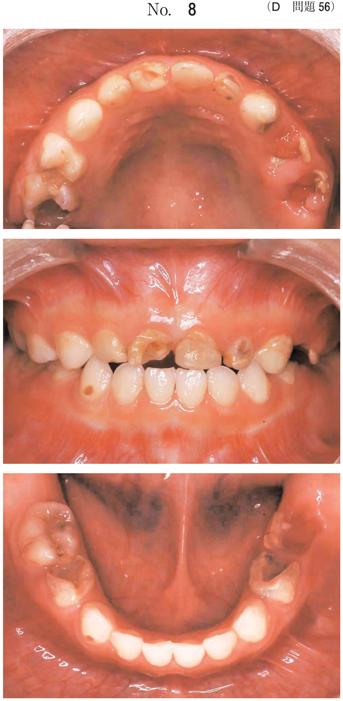
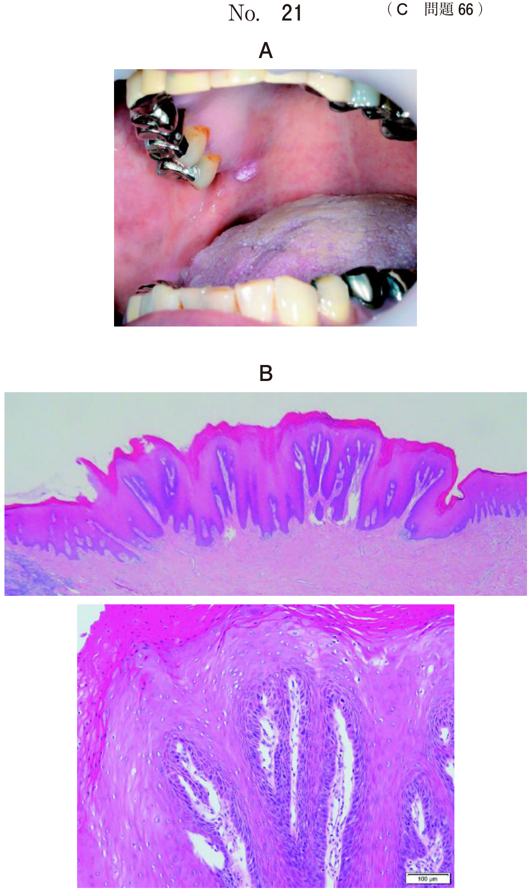

上皮性悪性腫瘍：診断
口腔癌の診断の流れ
口腔癌が疑われる場合、以下の順序で診断と評価を行う。
- 臨床診査：視診・触診（硬結の有無、潰瘍の性状、リンパ節腫大）
- 生検：確定診断（組織型・分化度の確定）
- 画像検査：原発巣の範囲・リンパ節転移・遠隔転移の評価
- 腫瘍マーカー：補助的診断・経過観察
- 重複癌検索：上部消化管内視鏡など
- 悪性が疑われる病変にはまず生検が最優先
- 治療方針の決定には生検だけでなく画像検査・重複癌検索も必要
- 各画像検査が「何を評価するためのものか」が問われる
生検（biopsy）
口腔癌の確定診断に不可欠な検査。組織の一部を採取し、病理組織学的に診断する。
- 組織型の確定（扁平上皮癌、腺様嚢胞癌など）
- 分化度の評価（G1高分化〜G4未分化）
- 浸潤様式の評価
悪性が疑われる腫瘤や難治性の潰瘍には、経過観察や対症療法ではなく生検を行うべきである。
画像検査の役割
各検査と評価対象
| 画像検査 | 主な評価対象 | TNM分類との対応 |
|---|---|---|
| 口腔内超音波検査 | 原発腫瘍の浸潤の深さ（DOI） | T分類（UICC 2017） |
| 造影CT | 原発巣の範囲、骨浸潤、リンパ節転移、遠隔転移 | T・N・M分類 |
| MRI | 軟組織浸潤の評価 | T分類 |
| 頸部超音波検査 | リンパ節転移の評価 | N分類 |
| FDG-PET/CT | 遠隔転移の評価、全身検索 | M分類 |
| パノラマXP | 顎骨浸潤の概観 | T分類（局所） |
| 歯科用CBCT | 顎骨浸潤の詳細評価 | T分類（局所） |
- CT と PET（FDG-PET/CT）
- 口腔内超音波・歯科用CBCT・パノラマXPは遠隔転移の評価に用いない
腫瘍マーカー
| マーカー | 正式名称 | 関連する腫瘍 |
|---|---|---|
| SCC抗原 | 扁平上皮癌関連抗原 | 扁平上皮癌（口腔癌で最も重要） |
| CEA | 癌胎児性抗原 | 消化器癌を中心に広く腫瘍で上昇 |
| AST | アスパラギン酸アミノトランスフェラーゼ | 腫瘍マーカーではない（肝機能検査） |
| CRP | C反応性蛋白 | 腫瘍マーカーではない（炎症マーカー） |
| KL-6 | シアル化糖鎖抗原 | 腫瘍マーカーではない（間質性肺炎のマーカー） |
口腔癌の約90%は扁平上皮癌であるため、SCC抗原が臨床的に最も有用。
重複癌の検索
口腔癌患者では重複癌（同時または異時性に他臓器にも癌が発生）の頻度が高い。特に食道癌との合併が多いことが知られている。
- 上部消化管内視鏡：食道癌・胃癌の検索に用いる
- 共通のリスク因子（飲酒・喫煙）による field cancerization が背景にある
治療方針の決定にあたっては、重複癌の存在が治療計画全体に影響するため、内視鏡検査は重要。
舌癌のリンパ節転移
舌癌は口腔癌の中で最も頻度が高く（約40%）、リンパ節転移を起こしやすい。
転移しやすいリンパ節
| リンパ節 | 転移頻度 |
|---|---|
| 上内頸静脈リンパ節（上内深頸リンパ節） | 最も多い |
| 顎下リンパ節 | 多い |
| 中内頸静脈リンパ節 | あり |
| 顎下リンパ節 → 耳下腺部 → 顎下部の順 | ― |
浅頸リンパ節・後頭リンパ節・耳介後リンパ節は舌癌の転移先としては稀。口腔癌の所属リンパ節は頸部リンパ節である。
リンパ節転移の評価に用いる検査
- 造影CT：リンパ節の腫大・内部壊死の評価
- 超音波検査：リンパ節の内部エコー・血流評価
骨シンチグラフィは骨転移の評価に用い、リンパ節転移の評価には不適切。歯科用CBCTやパノラマXPも頸部リンパ節の評価には用いない。
口腔癌の臨床統計
好発部位
| 部位 | 頻度 |
|---|---|
| 舌 | 約40%（最多） |
| 上下歯肉 | 約30% |
| 頬粘膜・口腔底 | 各約10% |
| 口唇・硬口蓋 | 少ない |
扁平上皮癌が口腔癌全体の約90%を占める。男女比は約1.5:1で男性に多い。60〜70歳代が中心。
過去問
53歳の女性。上顎左側犬歯部歯肉の腫瘤を主訴として来院した。6か月前から徐々に大きくなったという。疼痛はない。初診時の口腔内写真（別冊No.12A）とエックス線画像（別冊No.12B）を別に示す。 適切な処置はどれか。1つ選べ。


b スケーリング
c 切開排膿
d 生 検
e 上顎左側犬歯の抜歯
【解説】6か月間で徐々に増大する歯肉腫瘤は悪性腫瘍の可能性がある。まず生検を行い、組織学的に確定診断をつけることが最優先。抗菌薬やスケーリングでは腫瘍性病変は改善しない。抜歯や切開排膿は診断がつく前に行うべきではない。
腫瘍マーカーはどれか。2つ選べ。
b CEA
c CRP
d SCC
e KL-6
【解説】CEA（癌胎児性抗原）とSCC（扁平上皮癌関連抗原）が腫瘍マーカーである。ASTは肝機能の指標、CRPは炎症マーカー、KL-6は間質性肺炎のマーカーであり、いずれも腫瘍マーカーには該当しない。口腔癌の約90%は扁平上皮癌であるため、SCCは特に重要。
舌扁平上皮癌で転移が多いのはどれか。2つ選べ。
b 後頭リンパ節
c 顎下リンパ節
d 耳介後リンパ節
e 上内頸静脈リンパ節
【解説】舌癌の所属リンパ節転移は上内頸静脈リンパ節（上内深頸リンパ節）と顎下リンパ節に最も多い。初診時に30〜40%にリンパ節転移がみられる。浅頸リンパ節、後頭リンパ節、耳介後リンパ節は舌からのリンパ流経路にないため、転移は稀である。
60歳の男性。左側舌縁の腫瘤を主訴として来院した。3か月前から症状がみられ、腫瘤は増大しているという。腫瘤には硬結を触れ、同側の顎下部に母指頭大のリンパ節腫大がみられる。初診時の口腔内写真（別冊No.28）を別に示す。 顎下リンパ節について行うべき画像検査はどれか。2つ選べ。

b 超音波検査
c 骨シンチグラフィ
d 歯科用コーンビームCT
e パノラマエックス線撮影
【解説】リンパ節転移の評価には造影CTと超音波検査が適切。造影CTではリンパ節の腫大・内部壊死・周囲組織との関係を評価できる。超音波検査では内部エコーや血流パターンからリンパ節転移を評価できる。骨シンチグラフィは骨転移の評価、歯科用CBCTとパノラマXPは顎骨の評価に用いるものであり、リンパ節転移の評価には不適切。
73歳の男性。下顎左側臼歯部の疼痛を主訴として来院した。3か月前に自覚したがそのままにしていたところ、徐々に増悪してきたという。初診時の口腔内写真（別冊No.31A）、エックス線画像（別冊No.31B）及び造影CT（別冊No.31C）を別に示す。 治療方針を決めるにあたり必要な検査はどれか。4つ選べ。



b 生 検
c 頸部超音波検査
d 上部消化管内視鏡
e 99mTcO4-シンチグラフィ
【解説】治療方針の決定に必要な検査を網羅的に選ぶ問題。生検（確定診断）、PET（遠隔転移の評価＝M分類）、頸部超音波検査（リンパ節転移の評価＝N分類）、上部消化管内視鏡（重複癌の検索）がいずれも必要。99mTcO4-シンチグラフィは唾液腺機能の評価に用いるものであり、口腔癌の治療方針決定には不要。